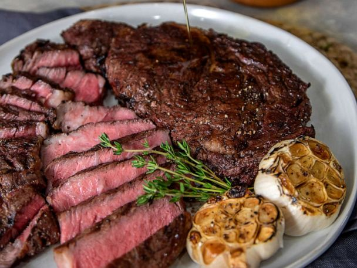

Sous Vide Steak

Description
If you like a juicy streak. Sous Vide is the way to go. This way of preparing
steak will make just about any steak tender. This reqiures a vacuum sealer and
a specific water heater. However if you have these at your disposal. You will
not regret making a steak this way. WARNING undercooked food
can make you sick.
Ingredients
- Steak - We prefer choice grade or higher. Ribeye or a similar style of steak.
- Salt and Pepper - Good steaks don't need a lot of seasoning. Salt and pepper is all you need.
- Butter,thyme and garlic - If you intend to finish your steak in an iron skillet you will need these ingredients.
Steps
- Vacuum seal your steak
- Set your water temperature 5 degrees lower than how you like your steak cooked. I like medium rare so I set my temperature to 125.
- I leave my steak in the water bath for 1.5 hours. Thicker steaks may take longer.
- Once an hour and a half has passed. Remove steak from vacuum bag and place on plate.
- Sprinkle salt and pepper on top of your steak.
- You can sear your steak however you like. My preferred method is a blow torch. You can use an iron skillet with butter, thyme and garlic. Or sear it on the grill.
- Once seared let steak rest for 5 minutes.
- Dig in and Enjoy!
Homepage